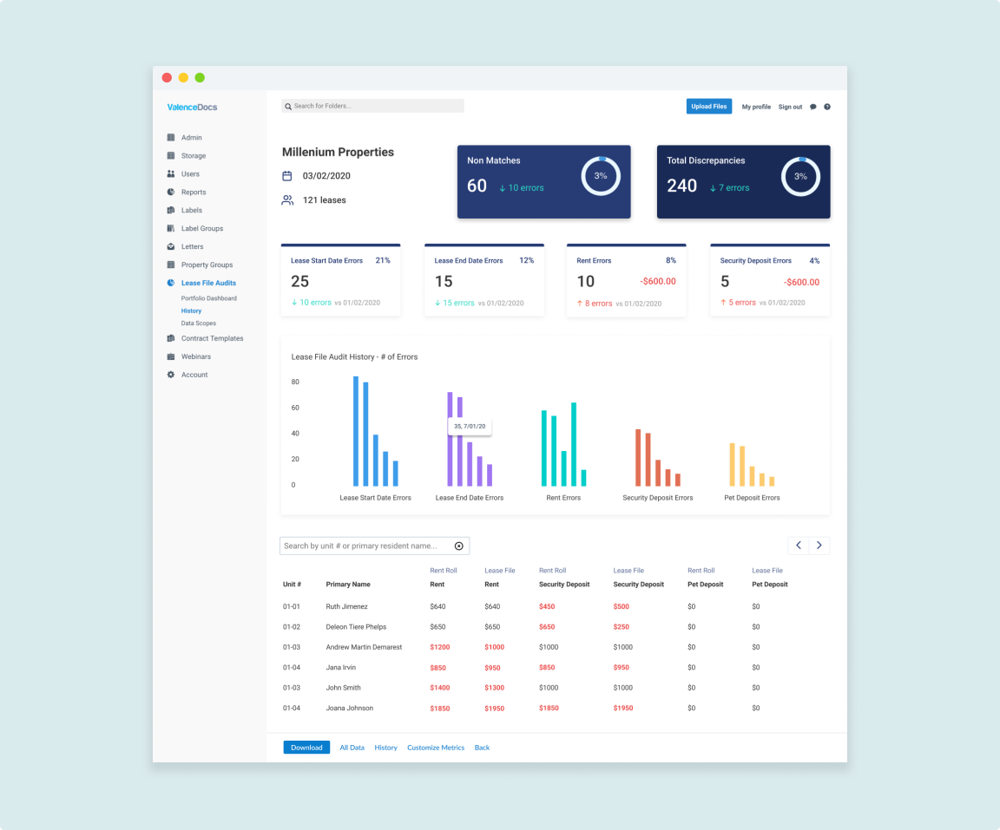

Dustin Dong
Hi! I'm Dustin Dong, A New York City based
Product Designer
who loves the User Experience
Case Studies

ValenceDocs - Lease File Audits
Research • UX / UI • HTML / CSS / JS
A tool to help users automate Lease File Audits.